Home / Our work
Our work
Sixteen made up jobs
Every job and every town on this page is invented for the demo, and every picture was generated for it. Filter by the sort of job, or open one to see it bigger.
16 jobs
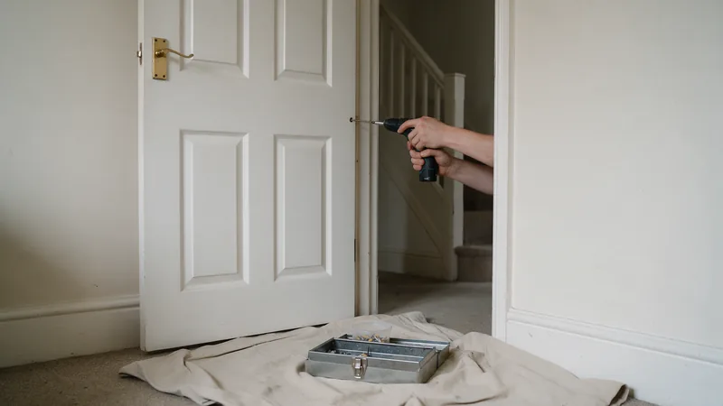
Generated photoHinge off, door back onCrosby · Sample Generated photoLevelled before it was fixedAintree · Sample
Generated photoLevelled before it was fixedAintree · Sample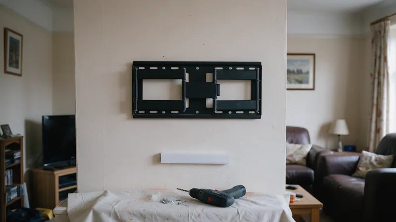
Generated photoBracket on, cables tidiedLitherland · Sample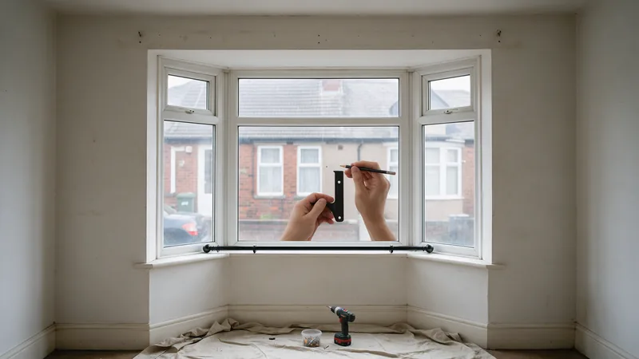
Generated photoPole over a bayCrosby · Sample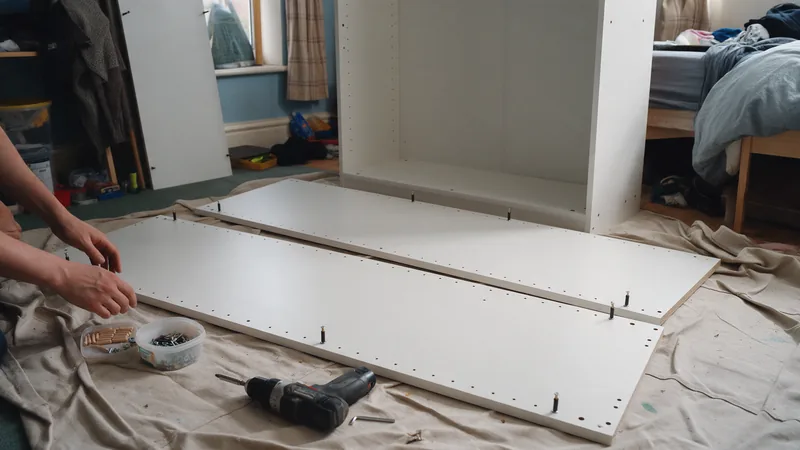
Generated photoPanels out, carcase upBootle · Sample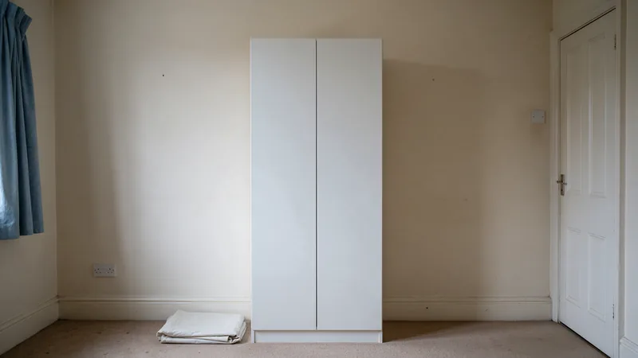
Generated photoDoors hung squareBootle · Sample Generated photoLatch edge easedHightown · Sample
Generated photoLatch edge easedHightown · Sample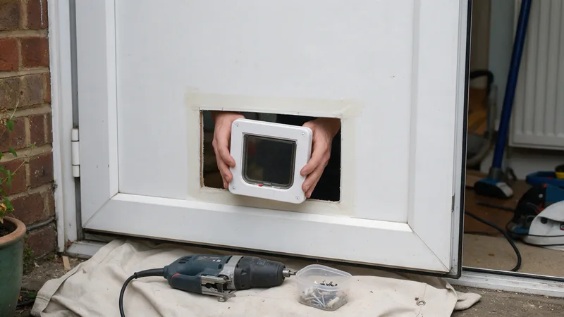
Generated photoCut clean, flap readyLitherland · Sample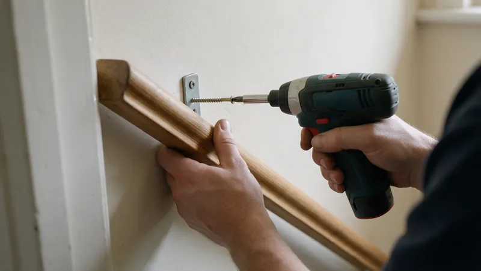
Generated photoHandrail pulled back tightBootle · Sample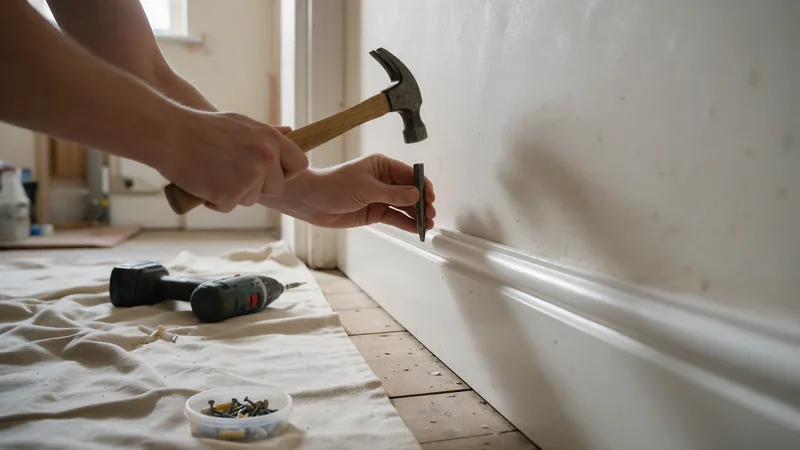
Generated photoSkirting back where it belongsCrosby · Sample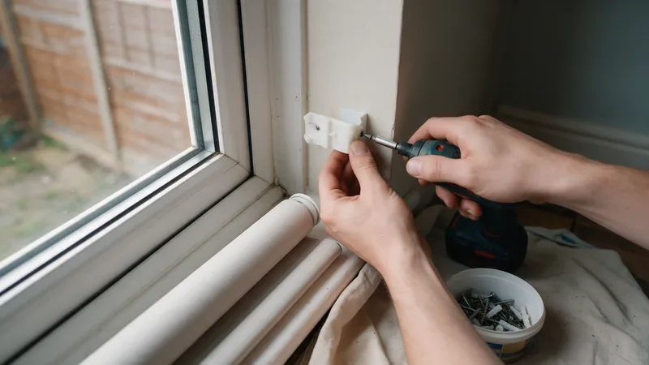
Generated photoBrackets in the revealAintree · Sample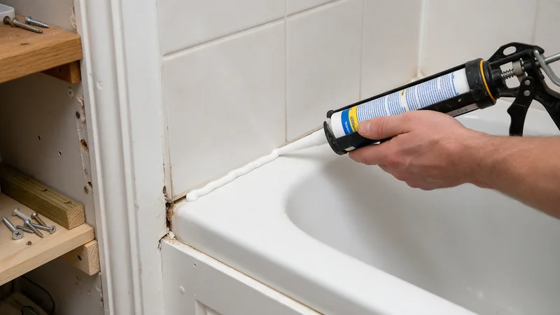
Generated photoOld seal out, new bead inLitherland · Sample Generated photoNew post, stood plumbHightown · Sample
Generated photoNew post, stood plumbHightown · Sample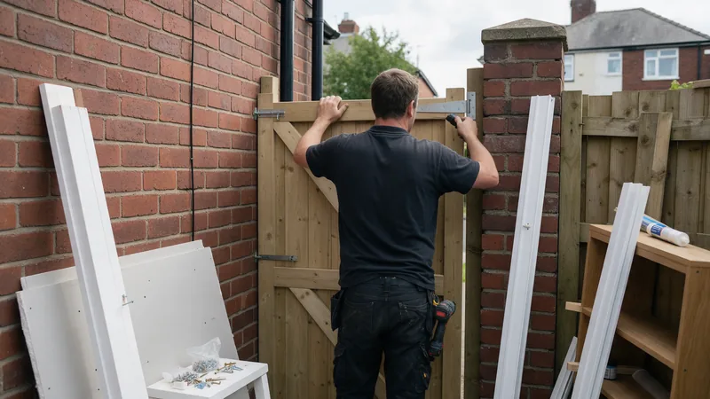
Generated photoSide gate re hungCrosby · Sample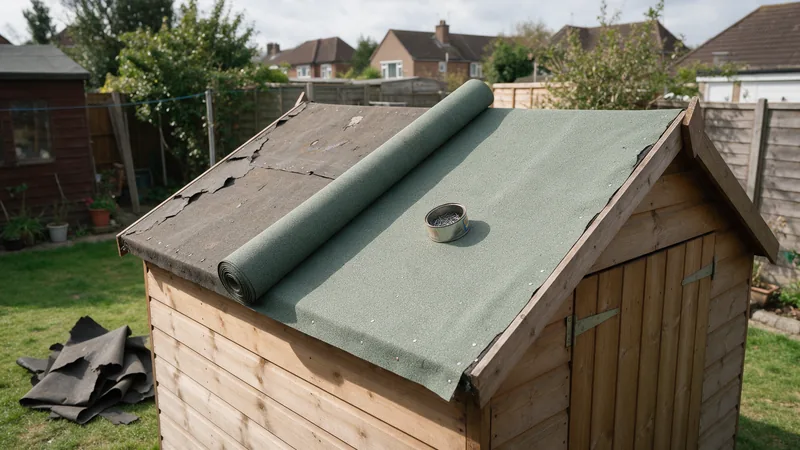
Generated photoShed roof re feltedAintree · Sample Generated photoEmpty, and a list to work throughBootle · Sample
Generated photoEmpty, and a list to work throughBootle · Sample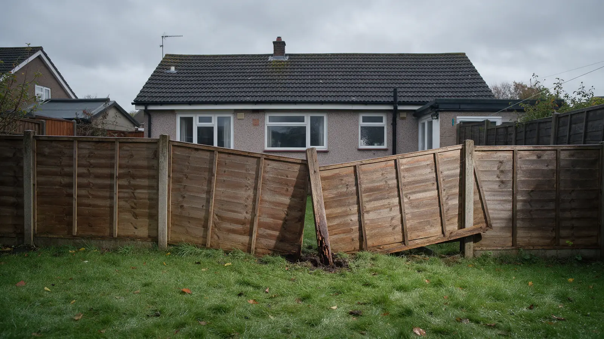
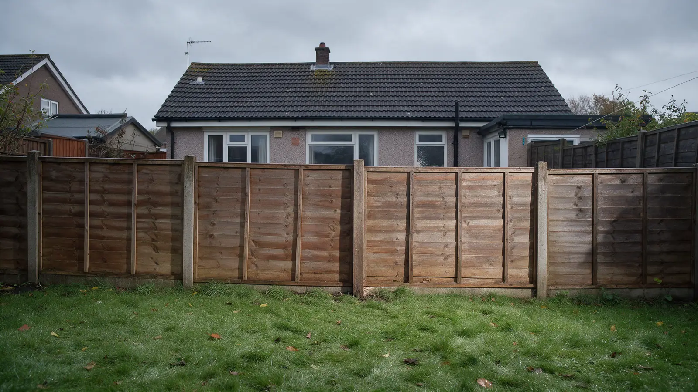
Before and after
A post gone at the ground line
The same spot, the same light, the same fence. One post replaced and the run of panels brought back into line. Both pictures were generated for this demo and the second was made from the first so it is the same garden.
Something like one of these?
Put it on a list with everything else and we will tell you what fits in a visit.